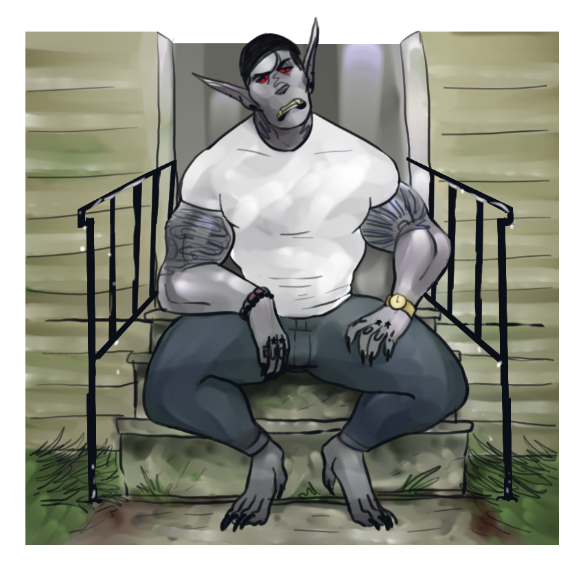
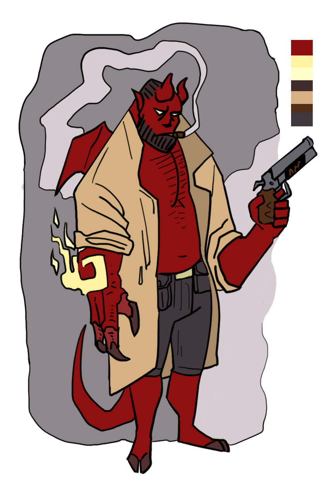
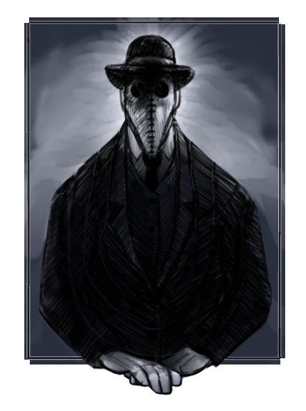
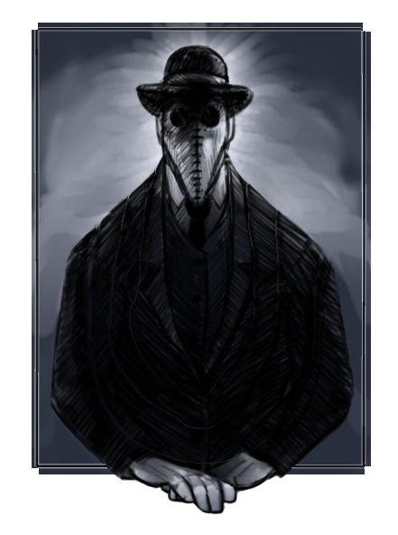
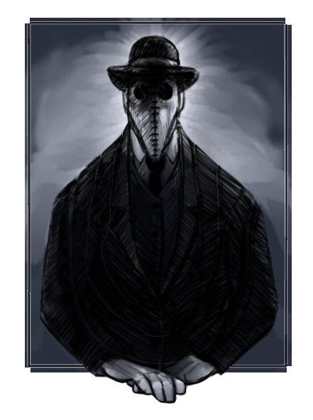

I began my professional career in the workforce with a simple entry level position at a Sonic drive in in the state of Virginia. From Sonic I went to The Dollar Store and I have been there ever since. I work at an employee at the Dollar store in Highland Illinois, as well as a professional graphic artist to sustain myself while I learn code at Launchcode.
Jobs I've held
Sonic Drive-In
Dollar Store (Virginia location)
Dollar Store (Illinois location)
The winding road of Launchcode
My journey from Virginia to Illinois was much more than a change of location for me. I move from Virginia specifically to learn in Launchcode with the assistance of my big brother Chris Nava, who taught in Launchcode as a TA for the first unit. In the course of applying for a position at launchcode as a student, I overcame many hurdles. Just a few among them that I've overcome this year include: Earning a driver's license, Purchasing my first car, Getting a job in a new state, and successfully sustaining part of my income on my artistic ventures.
My aspirations
My aspirations when Launchcode ends is to seek an entry level position as a Technical Support Employee, and later on to enter an apprenticeship as a Front-end Web designer. By the time I graduate here I hope to be fluent in HTML and Javascript, as well as to have made myself an awesome website and portfolio to be able to show to my future employers.
My Art
I've been drawing digitally and traditionaly ever since I could hold a pencil. It has been my escape and my stress relief ever since I could remember, and only recently has my many years of practice and experimentation begun to come to fruition as a source of income. This fact, I am very proud of. Here are some examples of my recent works!



 
